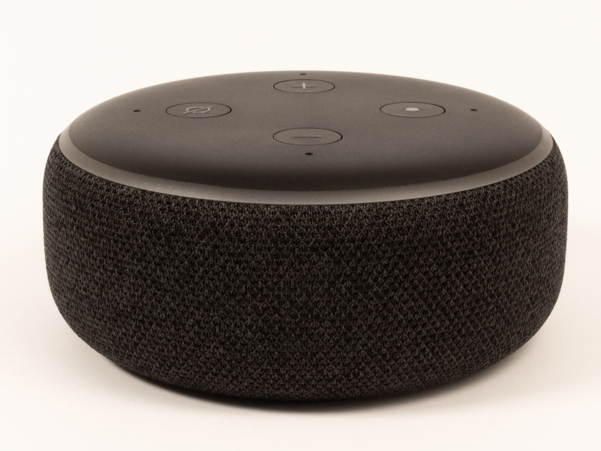

The Autopsy Report · Device #026
The Echo Dot, Third Generation
The best-selling smart speaker on Earth got a fabric jacket and a real speaker in 2018 — and a MediaTek heart. Public-records edition: we haven't opened one yet.
What is this thing?
The third-generation Echo Dot is Amazon's compact smart speaker: a fabric-covered puck with Alexa inside, four far-field microphones, and — new for this generation — a proper 1.6-inch speaker that EDN's teardown found audibly better than the buzzy little driver in the older Dots. It was the entry point to Alexa for millions of households. EDN teardown
The original 2018 model is D9N29T, filed with the FCC under ID 2AOAG-3668 (grantee: Moxham L.L.C., another Amazon filing entity). A later hardware revision, model C78MP8, carries a different FCC ID (2ARIW-2778) — this page covers the 2018 original only. FCC filing
Whose box is this?
Not ours — not yet. No unit of this device is on our bench. We haven't bought one, opened one, photographed one's insides, or listened to one boot. Everything on this page comes from public records: the iFixit and EDN teardowns, the FCC filing, launch coverage, and a freely-licensed stock photo credited below. When a unit lands on our bench, this report gets a second edition with our own photos, measurements, and boot log.
A short history
- March 2016Amazon launches the original Echo Dot — a tiny puck that brought Alexa to any speaker for $89.99. Tech Advisor
- September 20, 2018Amazon unveils the third-generation Dot: fabric cover, bigger speaker, new colors — still $49.99. It goes on sale October 11. Tech Advisor
- September 2018The FCC original-equipment filing for 2AOAG-3668 is submitted, covering model D9N29T. FCC filing
- Late 2018iFixit and EDN publish teardowns, identifying the MediaTek silicon inside. iFixit teardown EDN teardown
- March 2019The FCC filing's internal photos and manuals go public after confidentiality expires. FCC filing
The outside
A fabric-wrapped puck, slightly larger than its predecessor, with the light ring moved to the edge, four buttons on top (volume, mic mute, action), a 3.5 mm audio output, and a micro-USB power port on the back. The fabric — charcoal, heather gray, or sandstone — was the whole visual story: the Dot stopped looking like a gadget and started looking like furniture. iFixit teardown

The board
We haven't held this board ourselves, so this is the teardowns' account, not ours. The iFixit and EDN teardowns show a single main board built around a MediaTek application processor with a companion MediaTek Wi-Fi/Bluetooth combo chip, plus memory and the audio stage driving the new larger speaker. EDN's teardown notes the improved sonic performance as the generation's headline change — the speaker went from an afterthought to the point. iFixit teardown EDN teardown
One honest wrinkle: teardowns observed multiple memory configurations across units, so no single memory part number should be treated as universal for this model. The table below sticks to the silicon the teardowns agree on. iFixit teardown
Under the microscope: the chips
What's on the board according to published teardowns, what each part does, and how sure we are. Confirmed means a primary source (the manufacturer, the FCC, or our own bench) verifies it. Likely means public hardware records agree on it, but we haven't verified it ourselves. Every row links somewhere you can read more.
| Chip | What it does | How we know | Dig deeper |
|---|---|---|---|
| MediaTek MT8516 | The main processor — runs Alexa and the whole Dot. | Likely Named by both the iFixit and EDN teardowns. | iFixit teardown |
| MediaTek MT7658 | The Wi-Fi/Bluetooth combo radio. | Likely Named by published teardowns. | EDN teardown |
| Memory multiple configurations observed |
The Dot's RAM and flash storage. | Likely Present on every unit; teardowns report varying part numbers, so no single marking is claimed here. | iFixit teardown |
Datasheet note: MediaTek does not publish public datasheets for the MT8516 or MT7658 — that's a documentation gap in the industry, not in the research. The identifications above come from board markings photographed in public teardowns.
The government's file on this box
The 2018 Dot's FCC filing sits under FCC ID: 2AOAG-3668, with the original-equipment applications dated September 20, 2018 — the same day Amazon unveiled the device. The internal and external photos and the user manual went public on March 19, 2019, after confidentiality expired. FCC filing
What's in the file:
- Internal and external photos — the earliest public pictures of this hardware's insides, public since March 2019.
- Test reports — the lab measurements, including maximum listed outputs around 234 mW at 2.4 GHz and about 139 mW in part of the 5 GHz band. Independent confirmation of the radios.
- The user manual and label paperwork.
- What's missing. The schematics and operational description are listed but not publicly available — permanently confidential. Public photos, private blueprints.
Browse the file yourself: filing page
Listening to it boot
We haven't — there is no unit on our bench, so there is no boot log, no serial capture, nothing. That section gets written the day one arrives.
Our rule for debug ports, whenever we do meet this hardware: we listen, we don't knock. If the board exposes a serial console, we'll connect a read-only listener and record what the device volunteers about its own startup — and publish that. We won't use it to break in, dump firmware, or bypass anything. Whether this board exposes a console is currently unknown — it awaits the bench.
What we found
Amazon bet the Dot on MediaTek. Both the application processor and the wireless combo chip are MediaTek parts — a clean single-vendor platform for the highest-volume smart speaker in the world. If you're studying how to build a voice assistant at scale, this is the bill of materials to study. iFixit teardown
Don't universalize the memory. Teardowns found different memory configurations across units of the same model — a normal cost-optimization move, but it means any single teardown's memory marking is revision evidence, not gospel. iFixit teardown
What we didn't do
- This device is not on our bench. We have not disassembled one.
- We captured no boot log and ran no bench tests.
- We have not touched, extracted, modified, or shared this device's firmware.
- We have not probed any debug interface on it.
- We did not name a universal memory part — configurations vary across units.
- The product photo above is a freely-licensed stock image, credited in its caption — not our photography.
By the numbers
- Model: Amazon Echo Dot 3rd gen (2018), D9N29T
- FCC ID: 2AOAG-3668 (original filing September 20, 2018)
- Main chip: MediaTek MT8516 (quad-core ARM, voice-assistant platform)
- Radio: MediaTek MT7658 Wi-Fi/Bluetooth combo
- Memory: Multiple configurations observed — no single universal part
- Launched: September 20, 2018, at $49.99; on sale October 11
Words to know
Every term this page uses, in plain English. No prior knowledge required.
- Smart speaker
- A speaker with a voice assistant built in — it listens for a wake word, then answers, plays music, or controls your home.
- System on a chip (SoC)
- The whole computer — processor and friends — on one piece of silicon.
- Combo radio
- One chip that handles two wireless standards — here, Wi-Fi and Bluetooth together.
- Far-field microphones
- A ring of microphones designed to hear your voice from across the room, even with music playing.
- Boot log
- The text a device prints as it starts up. Engineers read it to see what's inside without opening anything.
- UART / serial console
- A simple port that lets you watch a device narrate its own startup, line by line.
- Firmware
- The software baked into the device — the part that runs before anything else.
- FCC
- The Federal Communications Commission — the U.S. agency that regulates anything that transmits radio. Every wireless gadget sold here has to pass its tests first.
- FCC ID
- The ID the FCC assigns to each approved wireless product. The first few characters are the company's grantee code; the rest is the maker's model code. Punch it into fccid.io and the whole public filing comes up.
Sources & confidence
- Launch details (date, price, availability): contemporaneous launch coverage. High confidence.
- Chip identities (MT8516, MT7658): two published teardowns agree. Medium-high confidence; still Likely until our bench confirms.
- Memory variation: reported across teardowns — treated as revision evidence. Medium confidence.
- FCC details (filing date, photo release, power levels): the public filing at fccid.io, reviewed September 2026. High confidence.
- Revision distinction (D9N29T vs C78MP8): public filing records. High confidence.
- Anything not listed here is unknown until the bench says otherwise. We'll say so, out loud, when that's the case.
Public-records edition. This device is not on our bench. No disassembly, no boot log, no bench testing, and no firmware touched, extracted, modified, or shared. The stock photo is freely licensed and credited in its caption.
Legal note. BareBoard is an educational project. Everything on this page is assembled from public records and freely-licensed photography credited in its caption. We don't publish, host, or distribute firmware, keys, passwords, or credentials. Product names and trademarks belong to their respective owners and appear here only to identify the hardware. If you believe anything here infringes your rights, contact us and we'll address it promptly.